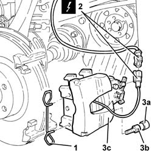
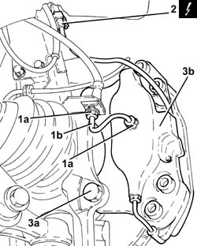
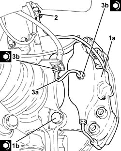

3310A30 FRONT BRAKE CALIPER ONE R R
- Path
- Procedures > 33 BRAKING SYSTEM > 3310 DISC BRAKES > 3310A FRONT DISC BRAKES > 3310A30 FRONT BRAKE CALIPER ONE R R
- Kind
- repair procedure (removal / refitting; the operation number is the code)
- Applies to
- all engines; all production periods
- Interactive page
- https://sloeber94.github.io/elrnDB-aGt/en/#/125001312
Applies to: engines: 1.8 T.SPARK, 2.0 JTS, 1.9 JTD 16V; all production periods
 Removing
Removing
 Refitting
RefittingPosition the vehicle on the ramp
Ensure that the ignition key is in the OFF position, then disconnect the negative battery terminal (-).
Name | Connector | |
|---|---|---|
- | Battery | See A1B BATTERY ( BATTERY NEGATIVE ) |
Proceed with removal
Op. 4450B10 TYRE INFLATION VALVE CAP - REPLACE
Proceed with removal
1. Remove the clip securing the brake caliper to the bracket.
Op. 3330E10 L/H OR R/H HOSE (ONE) TO FRONT BRAKE CALIPERS - R+R
2. Disconnect the electrical connections for the brake pad wear cable.
3. Remove the protective plugs (3a), undo the bolts (3b), then remove the front brake caliper (3c) with the pads.
Name | Connector | |
|---|---|---|
2 | Left brake pad wear sensor switch | See K20 LEFT BRAKE PAD WEAR SENSOR SWITCH ( FRONT ) |

Applies to: engines: 1.8 T.SPARK, 2.0 JTS, 1.9 JTD 16V; all production periods
Refitting
Removing.
Refit the front brake caliper complete with pads in its seating, tighten the bolts to the specified torque and fit the protective plugs.
 | Fastening | Component | Ø | Value (daNm) |
|---|---|---|---|---|
- | Bolt | FRONT BRAKE CALIPER ASSEMBLY | M12 | (Bracket side) 11.7 |
Connect the electrical connection for the brake pad wear cable.
Refit in its seating the clip securing the brake caliper to the bracket.
Proceed with refitting
Op. 3330E10 L/H OR R/H HOSE (ONE) TO FRONT BRAKE CALIPERS - R+R.
Top up the brake-clutch fluid level
Op. 3330A14 FRONT OR REAR HYDRAULIC BRAKE SYSTEM - BLEED.
Proceed with refitting
Op. 4450B10 TYRE INFLATION VALVE CAP - REPLACE.
Connect the negative (-) battery terminal
Applies to: engines: 3.2 V6; all production periods
Removing
RefittingPosition the vehicle on the ramp
Ensure that the ignition key is in the OFF position, then disconnect the negative battery terminal (-).
Name | Connector | |
|---|---|---|
- | Battery | See A1B BATTERY ( BATTERY NEGATIVE ) |
Proceed with removal
Op. 4450B02 LEFT FRONT WHEEL R R
Remove the protective cap on the brake caliper bleed valve.
Connect the collection system (pipe and reservoir) to the bleed valve on the brake caliper.
Operate the brake pedal until the brake-clutch reservoir and pipes are empty.
1. Undo the connectors (1a) and remove the rigid pipe to the brake caliper (1b).
2. Disconnect the electrical connections for the brake pad wear cable.
3. Undo the bolts (3a) and remove the front brake caliper (3b) complete with brake pads.
Name | Connector | |
|---|---|---|
2 | Left brake pad wear sensor switch | See K20 LEFT BRAKE PAD WEAR SENSOR SWITCH ( FRONT ) |

Applies to: engines: 3.2 V6; all production periods
Refitting
Removing1. Refit the rear brake caliper assembly (1a) complete with pads and tighten the bolts (1b) to the specified torque.
| Fastening | Component | Ø | Value (daNm) |
|---|---|---|---|---|
1b | Bolt | FRONT BRAKE CALIPER ASSEMBLY | M12 |
2. Connect the electrical connection for the brake pad wear cable.
3. Refit the rigid pipe to the brake caliper (3a) in its seating and tighten the connectors (3b) to the specified torque.
| Fastening | Component | Ø | Value (daNm) |
|---|---|---|---|---|
3b | Connector | FITTING FOR PIPE TO CALIPER | M10 | (Brake caliper side) 1.4 ÷1.8 |
| Fastening | Component | Ø | Value (daNm) |
|---|---|---|---|---|
3b | Connector | FITTING FOR PIPE TO CALIPER | M10 | (Flexible pipe side) 1.4 ÷ 1.8 |

Applies to: engines: 3.2 V6; all production periods
Top up the brake-clutch fluid level
Op. 0010T64 BRAKE AND OR CLUTCH FLUID CHECK LEVEL AND TOP UP AS NECESSARY.
Bleed the air from the hydraulic braking system
Op. 0010T65 HYDRAULIC BRAKE SYSTEM BLEED AIR.
Proceed with refitting
Op. 4450B02 LEFT FRONT WHEEL R R.
Connect the negative (-) battery terminal
Remove the car from the ramps.
Topics linked from this page (6)
- 0010T64 BRAKE AND OR CLUTCH FLUID CHECK LEVEL AND TOP UP AS NECESSARY
- 0010T65 HYDRAULIC BRAKE SYSTEM BLEED AIR
- 3330A14 FRONT OR REAR HYDRAULIC BRAKE SYSTEM - BLEED
- 3330E10 L/H OR R/H HOSE (ONE) TO FRONT BRAKE CALIPERS - R+R
- 4450B02 LEFT FRONT WHEEL R R
- 4450B10 TYRE INFLATION VALVE CAP - REPLACE